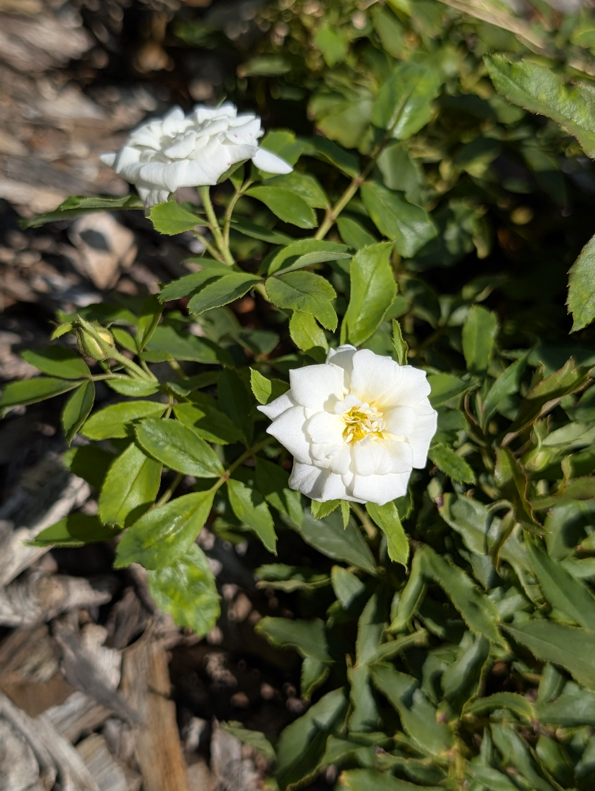

<html lang="en">
  <head>
    <meta charset="utf-8" />
    <meta name="viewport" content="width=device-width, initial-scale=1" />
    <link rel="icon" href="favicon.ico" />
    <title>Rosa korbin</title>
    <link rel="stylesheet" href="https://use.typekit.net/usd4ass.css" />
    <link rel="stylesheet" href="./style.css" />
    <link rel="preconnect" href="https://fonts.googleapis.com" />
    <link rel="preconnect" href="https://fonts.gstatic.com" crossorigin />
    <link
      href="https://fonts.googleapis.com/css2?family=Epilogue:ital,wght@0,100..900;1,100..900&family=Irish+Grover&family=Space+Mono:ital,wght@0,400;0,700;1,400;1,700&display=swap"
      rel="stylesheet"
    />
    <link rel="preconnect" href="https://fonts.googleapis.com" />
    <link rel="preconnect" href="https://fonts.gstatic.com" crossorigin />
    <link
      href="https://fonts.googleapis.com/css2?family=Epilogue:ital,wght@0,100..900;1,100..900&family=Irish+Grover&family=Josefin+Sans:ital,wght@0,100..700;1,100..700&family=Space+Mono:ital,wght@0,400;0,700;1,400;1,700&display=swap"
      rel="stylesheet"
    />
  </head>
</html>
<body>
  <div class="plant-container">
    <section class="plant-image-9">
      <a class="back-button" href="utruffula.html">Back</a>
      
    </section>
    <section class="plant-facts">
      <h1 class="plant-name">Rosa korbin</h1>
      <ul class="info-list">
        <li>
          “This rose, I say, has won prize after prize! Golds in ’58, world’s
          best in ’83 <br />
          Oh my, what a rise!”
        </li>
      </ul>
    </section>
  </div>
</body>
